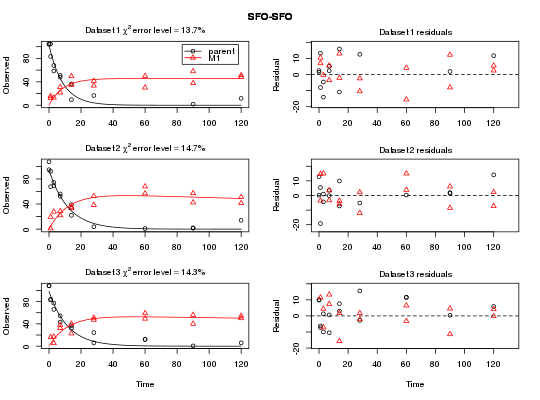
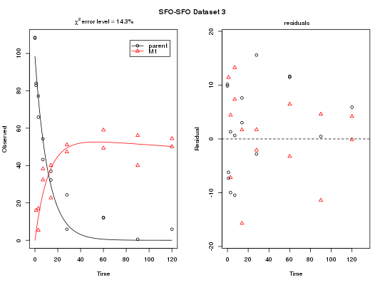

Add normally distributed errors to simulated kinetic degradation data
Usage
add_err(prediction, sdfunc, n = 1000, LOD = 0.1, reps = 2, digits = 1, seed = NA)
Arguments
- prediction
-
A prediction from a kinetic model as produced by
mkinpredict. - sdfunc
- A function taking the predicted value as its only argument and returning a standard deviation that should be used for generating the random error terms for this value.
- n
- The number of datasets to be generated.
- LOD
- The limit of detection (LOD). Values that are below the LOD after adding the random error will be set to NA.
- reps
- The number of replicates to be generated within the datasets.
- digits
- The number of digits to which the values will be rounded.
- seed
- The seed used for the generation of random numbers. If NA, the seed is not set.
Description
Normally distributed errors are added to data predicted for a specific
degradation model using mkinpredict. The variance of the error
may depend on the predicted value and is specified as a standard deviation.
Value
References
Ranke J and Lehmann R (2015) To t-test or not to t-test, that is the question. XV Symposium on Pesticide Chemistry 2-4 September 2015, Piacenza, Italy http://chem.uft.uni-bremen.de/ranke/posters/piacenza_2015.pdf
Examples
# The kinetic model m_SFO_SFO <- mkinmod(parent = mkinsub("SFO", "M1"), M1 = mkinsub("SFO"), use_of_ff = "max")Successfully compiled differential equation model from auto-generated C code.# Generate a prediction for a specific set of parameters sampling_times = c(0, 1, 3, 7, 14, 28, 60, 90, 120) # This is the prediction used for the "Type 2 datasets" on the Piacenza poster # from 2015 d_SFO_SFO <- mkinpredict(m_SFO_SFO, c(k_parent = 0.1, f_parent_to_M1 = 0.5, k_M1 = log(2)/1000), c(parent = 100, M1 = 0), sampling_times) # Add an error term with a constant (independent of the value) standard deviation # of 10, and generate three datasets d_SFO_SFO_err <- add_err(d_SFO_SFO, function(x) 10, n = 3, seed = 123456789 ) # Name the datasets for nicer plotting names(d_SFO_SFO_err) <- paste("Dataset", 1:3) # Name the model in the list of models (with only one member in this case) # for nicer plotting later on. # Be quiet and use the faster Levenberg-Marquardt algorithm, as the datasets # are easy and examples are run often. Use only one core not to offend CRAN # checks f_SFO_SFO <- mmkin(list("SFO-SFO" = m_SFO_SFO), d_SFO_SFO_err, cores = 1, quiet = TRUE, method.modFit = "Marq") plot(f_SFO_SFO)
# We would like to inspect the fit for dataset 3 more closely # Using double brackets makes the returned object an mkinfit object # instead of a list of mkinfit objects, so plot.mkinfit is used plot(f_SFO_SFO[[3]], show_residuals = TRUE)
# If we use single brackets, we should give two indices (model and dataset), # and plot.mmkin is used plot(f_SFO_SFO[1, 3])